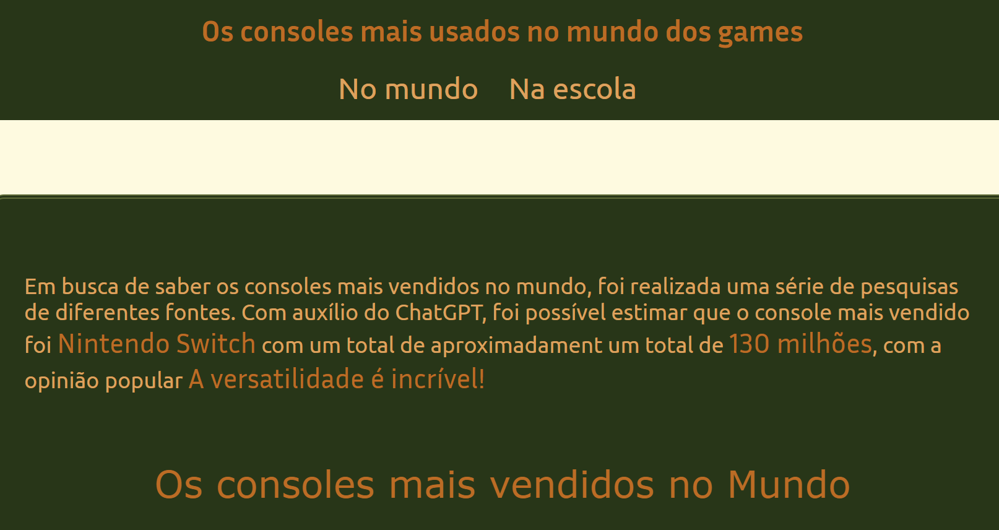
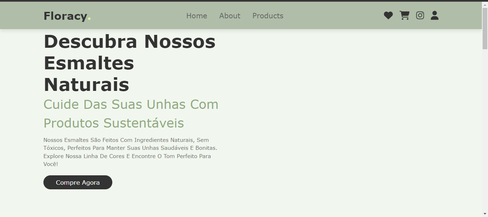
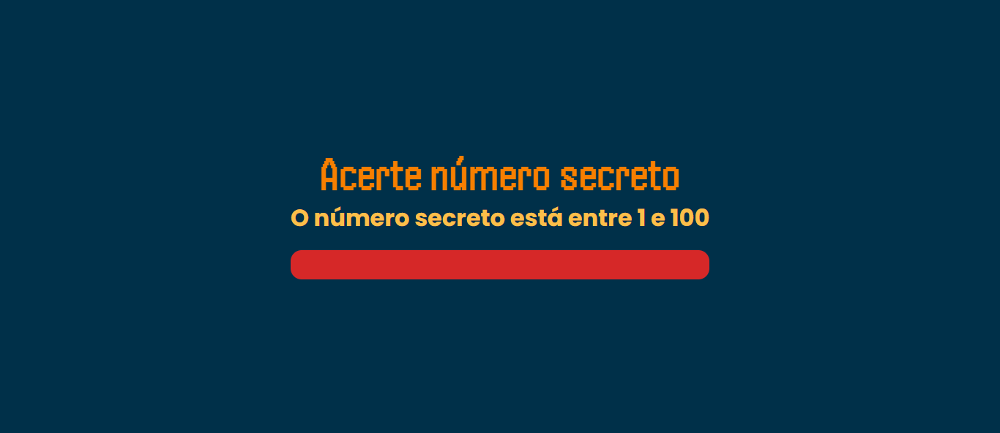
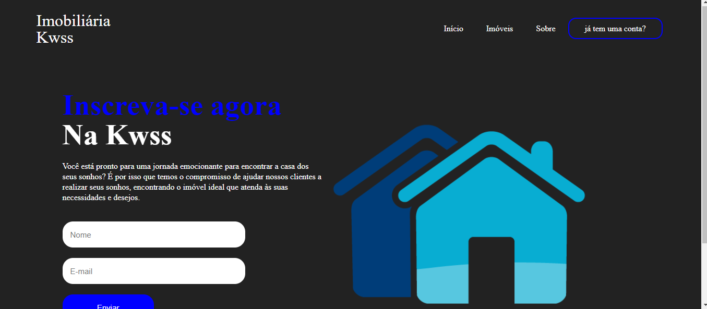
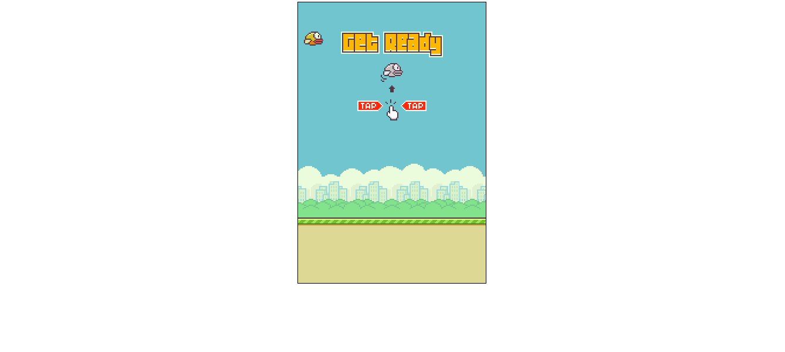
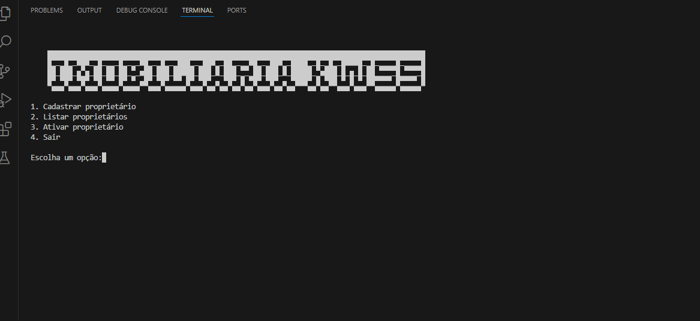

Tratamento de dados
Projeto desenvolvido com a intenção de fazer graficos.

Floracy
Projeto desenvolvido a pedido de uma amiga para um trabalho escolar sobre empreendedorismo.

Adivinha número
Jogo de adivinhação do número secreto, desenvolvido usando uma IA de reconhecimento de voz.

Imóbiliaria Kwss
Meu primeiro projeto HTML/CSS trata-se de compra e aluguel de imóveis.

Flappy Bird
Trabalho avaliativo da matéria de jogos digitais, recriamos o jogo do Flappy Bird em JavaScript.

Imóbiliaria
Um pequeno banco de dados em Python, para cadastrar clientes e imóveis de uma imobiliária.